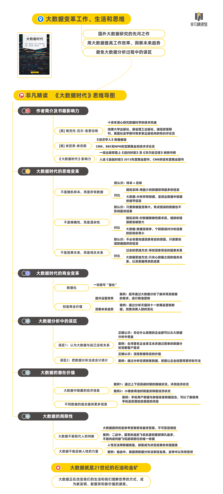

思维导图

大数据研究的先河之作
大数据时代，一场信息风暴正在变革我们的生活、工作和思维。数据背后的海量信息，隐含着对于社会生活的深刻洞察，影响着我们理解世界的方式。大数据之下，新发明和新服务正在崛起，更多的改变正在蓄势待发。
本书是大数据研究的先河之作，作者极富洞见地指出，大数据时代，我们只需要知道“是什么”，而不需要知道“为什么”。这颠覆了千百年来人类的思维惯例，要运用大数据，首先需要转换我们的思维方式。同时，对于大数据的运用及要避免的问题，也给出了非常有价值的建议。
是否也有以下疑问
- 我们应该做出哪些转变，才能从大数据中获益？
- 大数据能为我们的工作和生活提供哪些价值？
- 做数据分析时切忌哪些错误？
- 大数据还有哪些妙用？
- 大数据有哪些局限性？
适合这样的你听
希望了解未来发展趋势的你
希望提升工作与经营技能的你
希望学习数据分析方法的你
希望获得全新思维方式的你
听 前 热 身
数据：指用于表达客观事物的未经加工的原始素材。
样本：指研究中实际观察或调查的一部分个体。
随机采样：指从总体单位中抽取部分单位作为样本进行调查，以调查结果推断总体有关指标的一种抽样方法。
实用主义哲学：指强调实际经验更重要，原则和推理是次要的一种方法论。
书 籍 金 句
- 建立在相关关系分析法基础上的预测是大数据的核心。
- 大数据告诉我们“是什么”而不是“为什么”。在大数据时代，我们不必知道现象背后的原因，我们只要让数据自己发声。
- 数据已经成为有价值的公司资产、重要的经济投入和新型商业模式的基石。虽然数据还没有被列入企业的资产负债表，但这只是一个时间问题。
- 大数据并不是一个充斥着运算法则和机器的冰冷世界，其中仍需要人类扮演重要角色。
- 人类独有的弱点、错觉、错误都是十分必要的，因为这些特性的另一头牵着的是人类的创造力、直觉和天赋。
演讲实录
书友，你好，欢迎来到樊登读书非凡精读馆，今天我们讲的这本书叫作《大数据时代》。
大数据是近年来的一个热门话题，因为它的出现给了我们所有人一种前所未有的能力，通过数据分析，我们可以获得深刻的洞见，或创造出有巨大价值的产品和服务。这么说可能有点抽象，不容易理解，那我们来看一个具体的案例。
十几年前，有一家大超市，发现日子越来越不好过了，销售额成了钉子户，长期停滞不前，毛利率却坐了滑滑梯，越做越低。于是发动员工，头脑风暴，想办法、想出路。按员工的提议，超市先是玩了一段时间的会员卡，但很快发现会员都精得很，专挑便宜的买，一算账，会员顾客比非会员顾客贡献的毛利率还要低两个点。
第一炮没打响，就又换了个玩法，不玩传统的价格促销了，搞促销创新。结果发现顾客都是“刁民”，只认低价，不买创新的帐。
实在没辙了，就玩了个大的，调整卖场布局改排面，指着能通过更合理的布局和更生动化的商品展示来吸引顾客。这招倒是管用了，可好景不长，顾客很快就没了新鲜劲，过了三年，一切还原。
三板斧没起啥作用，正郁闷着呢，终于有人说，或许可以试试数据分析。超市老板想破脑袋也没想明白，数据分析能给他帮上什么忙。抱着死马当作活马医的态度，超市从外部请了数据分析团队。
团队分析了超市当年的购物小票，发现平均来看，客单价超过80元的顾客，在数量上只占5％，但却贡献了40％的销售额。客单价低于20元的顾客，在数量上占了75％，可只贡献了20％的销售额。从毛利率数据看，前者比后者也高了3倍还多。之后，团队又分析了前几年的购物小票，发现80元以上的客单近几年一直呈缓慢下滑趋势，20元的客单却在增长，这也就难怪各项业绩指标都在往下走了。
有了上面的分析，提升业绩的方法也很清楚了，这家超市只要能提升1％的80元以上的顾客数量，就可以带来8％的销售额增长。5％的人贡献了40％的销售额，所以1％的人贡献的销售额就是40％÷5=8％。同时，毛利率也会相应提升。那现在的问题是，80元以上顾客有什么购物特征呢？怎么分析呢？还是要分析购物小票。
这种分析有很多角度，比如，购买时段分析就是其中之一。分析超市的购物小票后发现，超市之前特别关注的午饭前和晚饭前这两个高峰期，其实是20元顾客的两个购买高峰，峰值顶点分别在10:30及16:30左右。而另一个小高峰，也就是19:30左右，才是80元以上顾客购物的高峰期。
再比如，商品组合分析也是一种方法。分析小票后发现，超市经常用特价来吸引顾客的散装大米、鸡蛋等商品，很少出现在80元以上的客单里，80元以上的客单最经常出现的是红酒、熟食、化妆品等商品。
好了，以这些分析为指导，你应该采取什么行动？你应该把促销资源往哪些商品上分配？往哪个时段倾斜？已经一目了然了。
这种建立在大数据基础上的洞察，在以前的时代环境中你根本就没法想象。所以，本书作者之一的舍恩伯格才会指出，大数据的出现开启了一次重大的时代转型。在大数据时代，人类社会的政治、经济、商业、科学等各个领域都会发生巨大的，甚至是根本上的改变。
既然提到了作者，就先简单介绍一下本书的两位作者吧，这两位可都是大数据领域的牛人。第一位是牛津大学网络学院互联网研究所治理与监管专业的教授维克托·迈尔-舍恩伯格。他是一位牛津大学的教授，也是最早洞见大数据时代发展趋势的数据科学家之一，被称为“大数据时代的预言家”。同时，他还为微软、惠普、IBM等全球顶级公司提供咨询。另一位作者是肯尼斯·库克耶，他是《经济学人》杂志的数据编辑。
好了，介绍了两位大牛作者，我们可以来看一看他们在这本书中描述的大数据的各种神奇表现了。
一、大数据时代的思维变革
先来看一下，要想从大数据中获得价值和洞见，有没有什么前提条件。
作者认为，要想从大数据中获益，我们首先需要在思维层面做出一些转变。所以，他们给这本书起了个副标题，叫作“生活、工作与思维的大变革”。
01 不是随机样本，而是所有数据
具体来说是三个转变。第一个思维转变是，分析问题的时候，我们要分析与问题相关的所有数据，而不是像以前那样，依靠随机采样，然后分析少量的数据样本。
什么意思呢？以前，因为技术条件的限制，我们采集、记录和处理数据的能力非常有限，所以，分析问题用到数据时，只能随机采样。而现在，技术条件已大大进步，我们采集、记录和处理数据的能力已经有了质的提升。所以，两位作者提出“样本=总体”的概念，认为我们现在应该分析所有的相关数据，而不仅仅是少量的采样数据。像我们前面提到的超市那个案例，分析团队就分析了超市近几年所有的购物数据，而不仅是少量的抽样数据。
随机采样是在以前技术条件有限的时候，我们不得已的一种选择。它的优点是，在当时的环境条件下，能用最少的数据获得最多的信息。但这种分析方法也有一个很难克服的缺陷，就是它很难呈现出全部数据中隐藏的一些细节信息。
2006年的德国世界杯足球赛，东道主德国队和南美劲旅阿根廷队在1/4决赛中遭遇，双方激战120分钟后打成了1:1平，只好进入残酷的点球大战。最终，德国队守门员莱曼表现神勇，扑出了阿根廷队阿亚拉和坎比亚索两名球员的点球，帮助德国队晋级到了下一轮。不过，这个功劳可不能全都记在莱曼的头上。
我们知道，足球比赛中罚点球时，点球点到球门线只有11米左右，在那些世界顶尖球员的脚下，球只需0.2秒就能从罚球点到达球门线。就算是世界上最优秀的守门员，也不可能在这么短的时间里做出有效的扑救动作。所以，有经验的守门员都是事先决定好向球门的哪一边倾斜自己的重心，以便扑救可能飞向这边的罚球。说白了，守门员这时候就是在赌一把。那既然是赌博，怎么才能提高赌赢的概率呢？
德国人对此早有准备。在比赛开始之前，他们就聘请专家分析了13000个点球的录像，对阿根廷最优秀的7个点球射手的习惯了如指掌。比如，里克尔梅习惯射向球门的左侧上角，克雷斯波长距离助跑时多射向球门右侧，而短距离助跑多射向球门的左侧等等。点球决赛开始前，德国队的守门员教练把一张列有阿根廷球员踢点球习惯的秘密纸条塞给了莱曼，莱曼只需要根据纸条上的指令扑救就可以了。而阿根廷人对此一无所知，输在了起跑线上，也最终输掉了比赛。
像球员踢点球的习惯这样的细节信息，只通过少数的几次观察自然是不可能获得的，这也是抽样分析法难以克服的缺陷。只有分析了一个球员的多数，最好是全部的点球记录，才能把这种可能连球员自己都没意识到的信息给挖出来。所以，作者认为，当技术条件的进步使我们已经能够获得并处理海量数据时，随机采样这种分析方法也就没有什么意义了。
解释完样本=总体这个概念后，我们可以来明确一下大数据的“大”是什么意思了。和很多人的主观理解不一样，两位作者对大数据中“大”的定义，并不是绝对意义上的大，而是相对于随机采样分析的少量数据而言的。就像踢点球这个案例，13000个点球记录里面，包含了阿根廷球员所有的点球记录，所以这就是一种典型的大数据分析法。
02 不是精确性，而是混杂性
了解了大数据的确切含义后，我们再来看看，想要从数据中获益，我们需要做出的第二个思维转变：对大数据来说，数据的量比精确性更重要，只要数据量足够大，有点错误的数据也不影响最终的分析结果。
随机采样分析对数据精确性的要求非常高，不能有一点偏差，因为采集的信息非常有限，这也就意味着细微的错误会被放大，甚至影响整个结果的准确性。但是当数据足够多的时候，个别错误数据对整个分析结果的不利影响就非常小了，几乎可以忽略不计，所以没必要非得去较那个劲，花大力气去确保所有数据的精确性。
书中举了一个例子，假设你要测量一个葡萄园的温度，如果整个葡萄园只有一个温度测量仪的话，那你就必须确保这个测量仪是精确的。但如果每100棵葡萄树就有一个测量仪，虽然可能有些测试的数据是错误的，甚至出现很多不同读数的混乱情况，但众多的读数合起来却可以提供一个更加准确的结果。
还有一个例子，我觉得能更好地说明当数据量足够大的时候，个别错误数据，甚至是很多错误数据，对最终分析结果的影响其实非常小。数据量足够大的时候，它本身就有了容错能力。
有一天早上，我去交警队处理违章，到交警队后取到的号是138号。交警队是9点开始受理，我等到10:15分的时候发现才受理到50号。交警队开了2个窗口，75分钟的时间处理了50个违章，也就是说平均每个窗口3分钟左右能够处理一个违章。我算了一下，按这个速度，到我需要207分钟，也就是3个小时27分钟。交警队的受理时间是上午的9点到12点，下午的1点到5点。从时间上推算，我上午基本是没戏了，肯定轮不到我了，排到我的时间应该是在下午的1点27分左右。于是我决定撤退走人，下午再来。下午1点我再次来到交警队，等了一会儿，叫到我的号的时候，我看了一下时间，是1点28分，只有1分钟的偏差。
很显然，每个人处理违章的时间肯定是不一样的，不可能正好都是3分钟。有的人扣分少，拿了自己的驾照来处理，基本也就一两分钟的时间。有的人扣分多，拿了两三本驾照来扣分，时间肯定就要多一些。有的人处理好了立马就走人，一点不耽误时间。有的人对违章有疑义，还要多问上几句。还有的人虽然取了号，但等不了时间，直接就撤了，另找空闲的时间再来处理。
所以，如果你只看少量的数据，比如只看前5个号的处理时间，你很难确定平均处理一个违章的时间，也就不能估算出轮到你的大致时间。但是当数据量足够大，就像这个例子中达到了50个号的时候，你就可以非常准确地估算出轮到你的时间，至于前面137个人每个人具体的处理时间是恰好3分钟也好，还是多一点少一点也罢，对你估算的结果其实影响不大。这还只是50个号推算出的结果，如果数据量更大，达到500个，推算出来的误差会更小。
03 不是因果关系，而是相关关系
如果说包容错误、接受混杂已经让很多人一时转不过弯来的话，那第三个思维转变的争议就更大了。作者强调，在大数据时代，我们不必非得知道某一现象背后的原因。也就是说，大数据对因果关系兴趣不大，而只关注相关关系。
如果A和B经常一起发生，那么，只要注意到B发生了，就可以预测A也发生了。至于为什么会是这样，大数据认为并不重要，重要的是可以通过B的发生预测出A的发生。
举个例子，2004年沃尔玛通过分析历史数据库发现，每当季节性飓风来临时，不仅飓风用品的销量会大幅增加，蛋挞的销量也会同步增加。所以，沃尔玛会把蛋挞放在靠近飓风用品的位置，以方便行色匆匆的顾客选购，从而增加销量。
至于为什么是蛋挞而不是热狗和飓风用品的销售同步增加，沃尔玛并不感兴趣，更不会花时间、精力去寻找背后的因果关系。沃尔玛关注的是建立在相关关系基础上的预测，只要能通过飓风用品销量的增加，预测出蛋挞的销量也会同步增加，就够了，企业就可以有意识地备足货源提升销售了。
但人的习惯还是希望能搞清楚因果关系，所以很多人对这一点不以为然，认为只满足于相关关系，而不去搞清相关关系背后的因果关系，是实用主义哲学在作祟。但那又怎样，实用主义哲学确实有它的价值。
有这么一个例子。1768年，著名的库克船长率领英国远征队前往南太平洋的塔希提岛观察金星凌日这种天文现象，之后又跑去澳大利亚和新西兰溜达了一圈，直到1771年才回到英国。这趟远征不仅带回了数量惊人的天文学、地理学、气象学、动植物学的资料，为这些学科之后的发展奠定了重要基础，还创造了一个奇迹，就是没有一个人因为坏血病死在途中。
在人类远洋航海的早期，会有一半以上的船员死在途中，再也回不了家了。最大的原因倒不是风浪和海盗，而是当时人们还一无所知的坏血病。16到18世纪，这种病夺走了200万船员的生命。
一直到1747年，英国医生詹姆斯·林德终于找到了对付坏血病的方法。他用患上坏血病的船员做了一个实验，把船员分为两组后，分别给予不同的治疗，其中一组船员吃了大量的柑橘类水果，效果不错，患者很快就痊愈了。现在我们都知道，船员的坏血病是因为在远洋的过程中吃不到蔬菜和水果、缺乏维生素C导致的，吃了柑橘、补充了维生素C自然就好了。但当时的人可不知道这种因果关系，包括林德医生自己也不知道，他能确定的只是吃了柑橘坏血病就好了这种相关关系。
库克船长可不管那么多，只要不死人就行，管它是什么原因呢。所以他的远征队起航时带了大量的酸菜，而且每次靠岸时他都命令船员必须多吃新鲜的水果和蔬菜。而最终的结果也证明林德医生是对的。可以想象，如果仅仅因为不知道为什么新鲜的水果和蔬菜能对抗坏血病，宁愿死半船人，也不把林德医生的实验结果当回事，那不是缺心眼还能是什么？
好，前面我们介绍了要从大数据中获取价值和洞见，在思维层面我们应该做出的3个转变。包括要分析所有数据，而不是分析少量的数据样本；没必要太过追求数据的精确性，少量的错误数据对最终的分析结果其实没啥影响；还有就是没必要太过纠结于某一现象背后的因果关系，知道相关关系就可以了。
二、大数据时代的商业变革
完成了这3个转变后，你现在肯定想知道，大数据到底能为我们干点啥呢？
要想让大数据为我们做点啥，第一步，我们得有数据，也就是需要把事物或者问题数据化。比如说人民英雄纪念碑的地理位置，你既可以说它在北京天安门广场的中心，也可以说它在东经116度23分30秒，北纬39度54分12秒，后者就是人民英雄纪念碑位置的数据形式。
两位作者认为，只要有一些想象力，一切事物都可以被数据化。甚至有些表面上看起来跟数据没半毛钱关系的现象和问题，其实也可以提取出数据来。
比如说坐姿，很少会有人认为一个人的坐姿还能被数据化，但是，在日本先进工业技术研究所的越水重臣教授眼中就可以。越水重臣的团队在汽车座椅上安装了360个压力传感器，测量人对座椅施加压力的方式，把人体臀部的特征转化成了数据。之后，他用0-256这个数值范围对数据进行量化，这样就可以生成独属于每个乘坐者的精确数据资料。
一旦世界被数据化之后，就只有你想不到，没有信息做不到的事了。比如我们前面提到的地理位置数据化之后，美国联合包裹运输服务公司就能在它的货车上装上传感器、无线适配器和全球定位系统，然后通过这些设备来监督管理员工和优化行车线路。美国联合包裹运输服务公司的过程管理总监杰克·莱维斯就说，通过利用地理定位数据，仅仅在2011年，美国联合包裹运输服务公司的货车司机们就少跑了4828万公里左右的路程，节省了300万加仑左右的燃料，并且少排放了3万吨的二氧化碳。
这还只算常规操作，有些数据应用却完全让人意料不到。以越水重臣团队的研究为例，你可别以为人家的研究是小题大做，这项技术可以作为汽车防盗系统安装在你的车上。有了这个系统，汽车就能识别出驾驶者是不是你本人，如果不是，系统就会要求司机输入密码，如果不能准确输入，汽车就会自动熄火。甚至这个系统在判断出汽车被盗的时候，还可以通过收集盗车贼坐姿的数据资料识别出他的身份。你看，想不到吧？把一个人的坐姿转化成数据后，这些数据就可以孕育出一项切实可行的服务和一个前景光明的产业了。
万事万物都是可以数据化的，舍恩伯格甚至认为，世界的本质就是数据。一旦认识到这一点，就可以让大数据为我们创造价值了。
大数据当前主要应用在商业领域，一般可以通过两种方式为我们创造出巨大的价值。
01 提升运营效率
首先是可以提升组织的运营效率。
以前，通常通过两种方法来提升运营效率。一是资源投入，比如用机器替代人力。还有就是提升管理，比如通过对员工的激励，提升员工的工作意愿，发挥他们的聪明才智。现在又多了一种方法，就是分析数据。
书中有这么一个案例：某天，一位愤怒的父亲冲进一家塔吉特商店（美国的一家连锁零售商店），要求经理出来见他。这位愤怒的父亲质问经理说，他的女儿还只是个高中生，你们商店为什么要给她寄婴儿用品的折扣券，这不是在鼓励她怀孕吗？商店的经理道了歉，安慰了这位愤怒的父亲。可几天后，当商店经理再次打电话给这位父亲致歉的时候，他的语气变得平和了，他对商店经理说：“我跟我的女儿谈过了，她的预产期是8月份，是我完全没有意识到这个事情的发生，应该说抱歉的是我。”
现在的问题是，这家商店是怎么知道他的女儿怀孕了呢？答案是大数据分析。
对于一家商店来说，知道一个顾客是否怀孕能带来很多商机，因为这是一对夫妻改变消费观念的开始。他们会开始光顾以前不会去的商店，购买以前不会买的商品，渐渐对新的品牌建立忠诚等等。因此，塔吉特的市场专员向分析部求助，试图找到一种在完全不和这些准妈妈直接接触的情况下，仅通过一个人的购物方式，就可以判断她是否已怀孕了的方法。
接到求助后，塔吉特的分析团队分析了签署婴儿礼品登记簿的女性的消费记录，并注意到，登记簿上的顾客会在怀孕大概三个月的时候买很多无香乳液，几个月之后，她们会买一些钙、镁、锌之类的营养品。最终，分析团队找出了20多种关联物，这些关联物可以给顾客进行“怀孕趋势”评分，甚至可以使塔吉特准确地预测顾客的预产期，这样就可以在女性孕期的每个阶段给她们寄送相应的折扣券进行促销，这才有了那位愤怒的父亲的故事。
在这个案例中，塔吉特通过数据，识别出了自己的目标顾客，这样，就可以进行精准营销，提升了整个组织的运营效率。
02 洞察未来趋势
提升运营效率还只是大数据在战术层面上为我们创造的价值，更厉害的是，大数据还可以从战略层面上为我们创造价值。也就是通过对数据的分析，让我们洞察出未来的趋势。
每个人都希望拥有预测未来的能力，大数据让它更有可能实现。比如，2019年的双11，天猫实现了2684亿的销售，事后的统计发现，最受欢迎的进口商品居然不是婴儿奶粉或者LV包包这样的奢侈品，而是猫粮、宠物驱虫药和猫砂盆。天猫国际数据显示，双11全天，宠物品类成交额同比增长近130%，其中猫粮成交额同比增长近700%，宠物保健品同比增长165%。如果你是一家宠物相关品类公司的负责人，应该能意识到这些数据背后所隐藏的趋势价值。撸猫族正在全面崛起，你的经营方向、策略应该做出相应的调整了。
三、大数据分析中的误区 、
前面我们讲到，在商业领域，大数据能够为我们提供的帮助，包括战术层面的提升效率，以及战略层面的洞察趋势。但是，在现实中你会发现，有太多企业并没有从大数据中受益，这是为什么呢？在我看来，主要是因为许多企业在做数据分析时，经常会犯两个错误。虽然书中没有这部分的内容，但还是很有必要给管理者们提个醒。
误区1：认为大数据与自己没有关系
第一个错误是很多企业，特别是小微企业，一提到大数据和数据分析，就觉得跟自己没什么关系。因为上一套系统就是几十万，还得花大价钱去请专业人才，请来了还不一定能管理得好，反正自己也玩不起，还是敬而远之吧。其实完全不是那么回事，看一个案例你就明白了。
王永庆是台湾的一位著名企业家，他从小家境贫寒，只读了几年书就辍学了。1932年，15岁的他来到嘉义一家米店做学徒小工，第二年靠着东拼西凑的200元资金开了自己的米店。当时小小的嘉义已有近30家米店，竞争非常激烈。而王永庆的米店位于一条偏僻的巷子里，米店开办最晚，规模最小，而且是由一个未成年的孩子经营，所以很多人觉得他的米店开不了多久就得关门。但让人意想不到的是，王永庆不仅很快站稳了脚跟，而且后来居上，打得那些老店满地找牙。
其实王永庆的竞争策略很简单，总共不过三招。前两招是提高产品质量和改善客户服务，都属于常规的市场竞争策略，谈不上多出彩。但他的第三招是亮点，证明王永庆的经营意识远远超越了他所属的那个时代，用现在的管理学术语叫作“建立客户数据库，进行数据分析”。
在给顾客送米时，王永庆会记下这户人家的米缸容量，再通过聊天了解这户人家有几个大人、几个小孩、每人饭量大小，据此估算下次买米的大概时间，认真记在本子上。到时候不等顾客上门，他就提前几天主动把米送到人家里去了。
就这么简单，没什么复杂的系统，也不需要什么专业的人才，只需要一支笔、一个本子，企业就可以从数据分析中受益了。最重要的，是对客户需求的用心和洞察。
误区2：把数据分析当成会计统计
企业在运用数据分析时经常犯的第二个错误是，很多管理者只是把数据分析当成会计统计，而没有深入去挖掘数据背后所隐藏的价值。
比如说，我曾经在某著名空调企业的安徽销售公司工作过几年的时间，入职后，我被分到池州办事处做业务。那时公司每周都要求办事处提供大量的数据，包括导购员的终端台账、安装卡数据、库存数据等等。
但问题是，这些数据只是用来统计任务进度和同比增长率，没有人有意识、有目的地去挖掘这些数据中所蕴含的那些更有价值的、能够让企业经营得更好的东西。可以想象，如果当年王永庆记录和分析数据只是为了知道这个月是不是比上个月多卖了300斤大米，那能有什么意义呢？可能要不了几个月他就得关门歇业了。
所以啊，数据本身固然引人注目，但它背后的洞察才是真正的重点。
四、大数据的潜在价值
我们前面提到，一切事物都可以提取出数据，然后通过数据分析，我们就可以创造价值和服务了。不过数据的神奇之处在于，当它的基本用途被发掘后，也就是为我们的特定目的提供帮助后，它还有很多潜在的价值和用途，而且，有些用途完全让人意料不到。
01 大数据中隐藏的经济信息
比如，总部位于西雅图的交通数据处理公司Infix，它就收集了来自美洲和欧洲的近1亿辆汽车的实时交通数据，通过对比这些数据和历史交通数据，再考虑进天气和其他诸如当地有没有大型活动等信息，以此来预测交通状况。这些分析结果会被同步到汽车卫星导航系统中，政府部门和商用车队都会使用到这些结果。
神奇的是，Infix收集的数据信息可不是只能用来预测交通状况，它甚至可以被用来评测一个地方的经济状况。2011年，美国经济发展开始放缓，虽然政客们强烈否定，但这个信息还是被交通状况分析给披露了出来。Infix的分析发现，上下班高峰时期的交通状况变好了，这也就说明失业率增加了，经济状况变差了。
除此之外，Infix还把它收集的数据卖给了一个投资基金，这个投资基金用交通状况来判断一个大型零售商场销量的好坏，一旦附近车辆很多，就说明商场的销量会增加。在商场的季度财报公布之前，这个基金还利用这些数据分析结果换得了商场的一部分股份。
书中的这个案例，让我想到一个朋友跟我说过的一件事。我这朋友是做食用油生意的，前段时间他跟我说，他知道中国经济状况的好坏，而且还非常准确。我说你就吹吧你，你凭啥说你一定是对的？他说他没吹牛，是真的。他做的食用油有很多规格，包括1.8L、2.5L、4L、5L等等。其中1.8L和2.5L这两个小规格的食用油平时卖得不算好，一个月也就卖个100件左右（一件6瓶油）。
但每年过年前，这两个小规格食用油却能卖掉500件以上。原因是回家过年时，在外地工作的人们在老家也就呆十几二十天，买5L的食用油吃不掉，在家放一年，到下一年回来再吃，基本就快到保质期了，所以这些人主要买小规格的食用油。
但有一次他备的货却积压了，只卖出去300件左右。后来他了解了一下原因，发现是因为很多人之前的工作单位关闭了，年后他们暂时不用出去了，所以就买了5L的食用油，毕竟单位价格要便宜一点。当时，各种新闻、报刊上关于经济下行压力加大，中国经济亟待升级和转型的报道明显多了起来。
然后他又说，那次之后他就学乖了，过年的时候不备那么多的小规格食用油了。可这一两年每年都卖断货，这说明过年后去外地工作的人增多了，有更多的企业在生产经营，所以他说中国经济在向好的方向发展。
你看，本来食用油的销售数据是用来做会计统计用的，但谁能想到，这些数据中竟然还隐藏着经济状况的信息。所以，作者才在书中指出，数据的真实价值就像漂浮在海洋中的冰山，它的基本用途只是我们第一眼看到的水面上的一角，而绝大部分价值其实隐藏在表面之下。
02 不同数据组合提供更多信息
书中介绍了很多种把数据的潜在价值释放出来的方法。比如说，把两个截然不同的数据结合起来，就是一种不错的方式。例如，关于使用手机是否致癌，一直众说纷纭。然而，丹麦癌症协会的研究团队基于以往的数据，想出了一个有趣的方法。
它分析了1990年至2007年拥有手机的用户，总共涉及到358,403人。同时，它还分析了那段时间总计10,729名中枢神经系统肿瘤患者的数据信息。结合这两个数据后，研究人员开始寻找两者的关系：手机用户是否比非手机用户显示出较高的癌症发病率？使用手机时间较长的用户是否更容易患上癌症？等等。最终，这项研究没有发现使用手机和癌症风险增加之间存在任何关系。
五、大数据的局限性
前面我们介绍了大数据带给我们的各种好处和价值，可以说大数据已经成了人们获得新的认知、创造新的价值的源泉。这也就难怪美国在2012年将“大数据战略”上升为最高国策，视大数据为“未来的新石油”，甚至将对数据的占有和控制作为陆权、海权和空权之外的另一国家核心能力了。
01 大数据不能取代人的判断
近几年社会各界对大数据的热捧，会给人一种感觉，好像大数据是无所不能的。可理想很丰满，现实很骨感，大数据也不是万能的，它也有自己的局限性。作者在书中就强调了，大数据并不能取代人的判断，它提供的只是参考答案，而不是最终答案。盲目地相信大数据，而忽略了人的判断，会带来极为严重的后果。
最典型的例子是二战时，盟军的空军飞机对德国展开了大规模的轰炸，但德国的防空火力也不是吃素的，盟军空军损失极为惨重。所以盟军空军请来专家，研究怎样给飞机加固钢板以减少损失。但以当时的航空技术，不可能整个飞机都加固，否则飞机太重就飞不起来了，飞起来也会操控迟钝，成为活靶子。
专家研究了返航飞机中弹弹孔的分布情况，发现飞机的机翼和腹部中弹最多，而座舱和机尾中弹最少，于是盟军空军准备给翼部和腹部加装钢板。但专家却坚决反对，认为应该给座舱和机尾加固钢板。因为机翼和腹部中弹多，飞机还能飞回来，说明那不是致命伤。而座舱和机尾中弹少，不是这些部位不容易受到攻击，而是这些部位受到攻击后，飞机就很难再飞回来了。
这就是人的判断的不可替代性，如果没有人的判断，盲目相信数据呈现出的结果，去加固翼部和腹部，不知道还要牺牲多少飞行员的生命。
02 大数据不能反映人性的力量
大数据更大的局限性还在于，它无法反映出人性的力量。美国前国防部长麦克纳马拉遭遇的滑铁卢，是这方面最典型的案例。
麦克纳马拉被称为数字教皇，他在二战中把数字化管理引入军队，极大地提高了后勤效率，节省了数十亿美元的经费，为赢得二战胜利作出了杰出的贡献。
战后，他加入福特汽车公司，把数字管理经验带到了福特，用数据分析的方法控制成本和产出，帮助当时已深陷泥潭的福特公司起死回生，也让自己成为了福特的总裁。
1961年，在福特总裁的宝座上没坐多长时间，他就接受了肯尼迪总统的邀请，出任美国国防部长。但就在国防部长的任上，他遭遇了人生的滑铁卢。
麦克纳马拉出任国防部长时，越战进入关键时期，麦克纳马拉同样把他的数据分析运用到了越战之中。在五角大楼的办公室里，一群高智商的分析师通过数据把握战争局势，利用系统分析法掌控全局。
双方的兵力对比是多少？应该派遣多少士兵？携带什么武器？配备多少弹药？有多少兵种协同作战？应得到多少支援？这一切的一切，都能通过数据分析得到解答。麦克纳马拉自信地认为，在数据的帮助下，美军能实现最小的伤亡，而北越将在短时间内一败涂地。
然而，最终的结果却是，越战整整打了20年的时间，耗资4000多亿美元，牺牲了5万多名美军士兵，并且以美方的失败收场。
终于，7年之后，麦克拉马拉在美国人民一片“战争贩子”“刽子手”的痛骂声中黯然下台，结束了他的国防部长生涯。
为什么会是这样？事后的分析认为，从战场上反馈上来的很多数据本身就是错误的。但其实这不是最重要的，因为对手不是电脑游戏里的虚拟士兵，更不是福特汽车的零配件，在真实的战争中，对手会根据战场局势不断调整自己的策略。所以，即使数据无误，双方的条件统统已知，也不能决定战争的最终胜负。真正重要的是，战斗的意志、高昂的士气、保家卫国的决心、视死如归的勇气，这些赢得一场战争最必不可少的因素，恰恰是数据无法反映出来的。
对数据的敏感成就了麦克纳马拉，可对数据的迷信，也使他跌落谷底。所以，数据绝不是万能的，它也有短板，也有局限性，绝对不能用它取代人的判断和作用。
好了，到这里《大数据时代》这本书的解读就全部结束了，我们来做一个简单的回顾。
1. 要从大数据中获取价值和洞见，在思维层面我们应该做出3个转变。
首先，分析数据时要像韩信点兵那样，多多益善。要分析与事物相关的所有数据，而不是依靠随机采样，分析少量的数据样本。
其次，只要能得到更多的数据，哪怕混杂一些错误的数据也无关紧要，因为我们从更多数据中得到的好处，远远超过少数错误数据对最终分析结果的影响。“海纳百川，有容乃大”，看来林则徐用于自勉的这句话在大数据这块也挺适用。
最后，就像陶渊明说“好读书，不求甚解”一样，没必要非得去搞清楚某一现象背后的因果关系，知道相关关系就可以了。
2. 大数据在商业领域的运用，包括对事物和问题的数据化，以及对数据的分析，可以用来提升运营效率和洞察未来趋势。
3. 企业在运用大数据时常常会犯两个错误。
一个是，总以为没有昂贵的系统和专业的人才，就玩不转大数据和数据分析，所以干脆敬而远之。还有就是，虽然现在很多管理者经常把“用数据说话”挂在嘴边，但却只是把数据分析理解成会计统计，而没有去挖掘数据背后所隐藏的价值和洞见。
4. 大数据的基本用途被发掘后，它还有很多潜在的价值和用途。
特别是有些用途完全让人意想不到，比如食用油的销售数据中，居然还隐藏着经济起伏的信息。
5. 最后，我们为你介绍了大数据的局限性，它也不是万能的，也有不靠谱的时候，绝不能取代人的作用和判断。
限于篇幅，书中还有一些内容我们没有介绍，有的挺有意思。比如说，如果大数据预判出某人未来几天会犯罪，我们应该怎么办？是在他犯罪之前就把他抓起来，还是任由他去犯罪，然后再收拾他？
网上有一个大数据的段子，说是一个顾客打电话，订一个海鲜味的披萨。客服回答说，根据你的医疗记录，你的血压和胆固醇都偏高，所以不建议订海鲜味的披萨。顾客问客服，有没有推荐的口味？客服说，你上周在网上买了一本《低脂健康食谱》，我们恰好有低脂健康披萨，你可以买一个尝试一下。顾客订了一个家庭特大号的，问要付多少钱？客服说，199元。又叮嘱说，这个足够你一家吃了，但你母亲上个月才做了心脏手术，还处在恢复期，所以最好少吃一些。顾客问，多长时间可以送到？客服说需要半个小时，如果等不及，可以自己来取，根据车辆行驶自动跟踪系统的记录，你的车离我们店只有5分钟的距离。
虽说只是一个段子，可也反映出了一个很严峻的现实问题。就是大数据就像一个透视镜，我们每个人在它面前都可能是透明的，毫无隐私可言。那么，在大数据时代，我们应该怎样保护自己的隐私呢？社会应该建立一些什么样的规范，来保护每个人的隐私呢？书友可以花点时间去翻翻这本书，看看书中会给出什么样的答案。